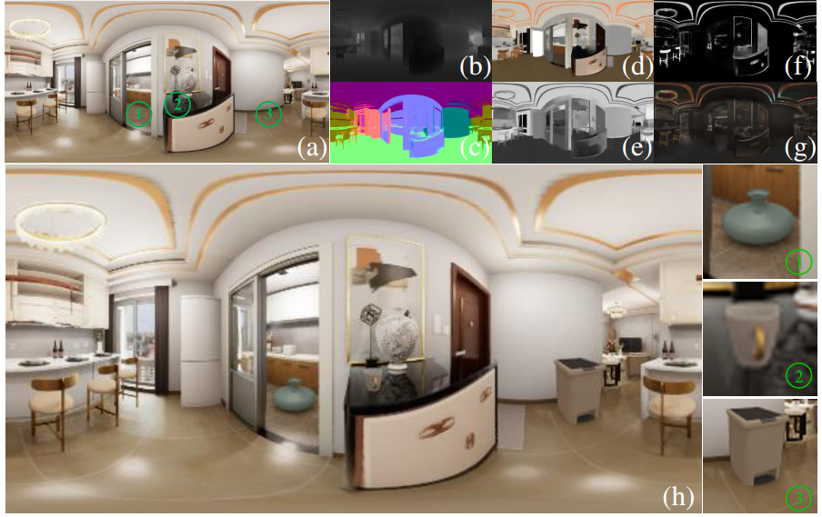

PhyIR: Physics-based Inverse Rendering for Panoramic Indoor Images
arXiv 2022

Abstract

Inverse rendering of complex material such as glossy, metal and mirror material is a long-standing ill-posed problem in this area, which has not been well solved. Previous approaches cannot tackle them well due to simplified BRDF and unsuitable illumination representations. In this paper, we present PhyIR, a neural inverse rendering method with a more completed SVBRDF representation and a physics-based in-network rendering layer, which can handle complex material and incorporate physical constraints by re-rendering realistic and detailed specular reflectance. Our framework estimates geometry, material and Spatially-Coherent (SC) illumination from a single indoor panorama. Due to the lack of panoramic datasets with completed SVBRDF and full-spherical light probes, we introduce an artist-designed dataset named FutureHouse with high-quality geometry, SVBRDF and per-pixel Spatially-Varying (SV) lighting. To ensure the coherence of SV lighting, a novel SC loss is proposed. Extensive experiments on both synthetic and real-world data show that the proposed method outperforms the state-of-the-arts quantitatively and qualitatively, and is able to produce photorealistic results for a number of applications such as dynamic virtual object insertion.